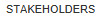
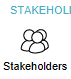
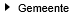
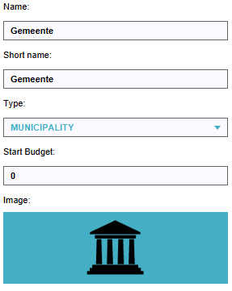
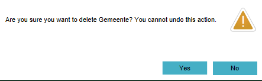
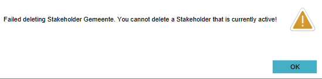
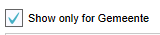
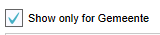

import logging;reload(logging)
FORMAT="%(asctime)-8s %(message)s"
logging.basicConfig(format=FORMAT, filename="test.log", level=logging.DEBUG)
logging.info("[info] Attempt to remove currently selected stakeholder and verify message flow...")
click()
click()
click()
wait(Pattern().exact().targetOffset(-17,-1),10)
find(Pattern().exact().targetOffset(-18,0))
click(Pattern().exact().targetOffset(-18,0))
wait(,15)
click()
wait(,5)
sleep(2)
click(Pattern().targetOffset(91,46))
wait(,5)
if not exists():
print("[error] Can't find asset")
logging.error("[error] Can't find asset")
exit(1)
else:
print("[success] Unable to delete selected stakeholder, correct message is displayed!")
logging.info("[success] Unable to delete selected stakeholder, correct message is displayed!")
click(Pattern().targetOffset(230,48))
click( )
wait(,5)
)
wait(,5)